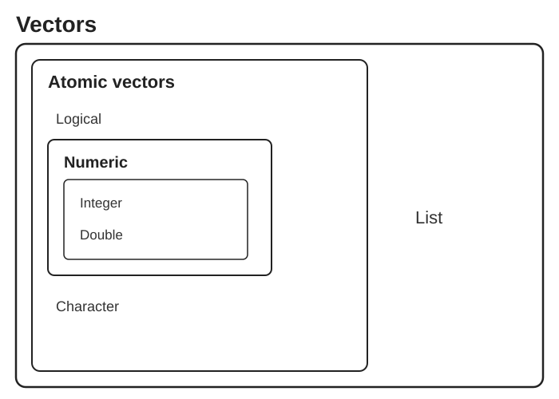

[1] 16Lecture 05 - Computational Tools for Bioengineers
R and Python Fundamentals 1: Scripts, Variables, Vectors and Types
Bill Cresko
2026-10-26
Book reading for this lecture
The course book goes deeper on everything in this lecture. Read before or after class:
Goals for today
- Using Positron and Visual Studio Code as script editors
- Why R and Python - same ideas, different syntax
- Scripts, variables, arithmetic, strings and vectors
- Types of data and getting help
R and Python: two scripting languages for data
Why use R?
- Good general scripting tool for statistics and mathematics
- Powerful and flexible and free
- Runs on all computer platforms
- New enhancements coming out all the time
- Superb data management & graphics capabilities
- Reproducibility - can keep your scripts to see exactly what was done
- You can write your own functions
- Lots of online help available
- Can use a nice IDE such as
Positron - Can embed your
Ranalyses in dynamic, polished files usingQuarto Markdown - Quarto Markdown can be reused for websites, papers, books, presentations…
Why use Python?
- A general-purpose language that is also excellent for data analysis (
pandas,numpy,matplotlib,scipy) - The language of machine learning, image analysis and instrument control (
scikit-learn,PyTorch,scikit-image) - Free, open source, runs everywhere - including Talapas (
module load python3) - Huge ecosystem:
pip installgives you access to >500,000 packages on PyPI;condaadds compiled scientific tools - Readable syntax; indentation is the structure of the code
- Runs as scripts (
python3 script.py), interactively (REPL / IPython), in Jupyter notebooks, and in Quarto{python}chunks - Same IDEs: Positron and VS Code run R and Python side by side
Tip
You do not have to choose. Most computational biologists use both: R for statistics and figures, Python for pipelines, images and machine learning. This lecture shows every idea in both languages - use the tabs.
Your IDE: the four panes
| Pane | Positron | Purpose |
|---|---|---|
| Code editor | Editor tabs | Write/edit scripts and .qmd files |
| Console | Console (R or Python) | Interactive session; run one line |
| Environment | Variables | Objects you have created, history |
| Files / Plots / Help | Explorer, Plots, Help, Data Explorer | Navigate files, view plots, read docs |
Tip
R and Python are the languages; Positron and VS Code are the IDEs you write them in. Write code in the editor so it is saved, and send lines to the console with Cmd/Ctrl-Enter. Customize the layout by dragging panes, or via View → Appearance.
R vs Python: same ideas, different syntax
| Idea | R | Python |
|---|---|---|
| Assignment | x <- 5 |
x = 5 |
| Counting starts at | 1: x[1] is the first element |
0: x[0] is the first element |
| Last element | x[length(x)]; x[-1] drops the first |
x[-1] is the last |
| Sequence of values | vector c(1, 2, 3) |
list [1, 2, 3] or numpy array np.array([1, 2, 3]) |
| Vector arithmetic | x^2 on any vector |
x**2 only on a numpy array (a list needs a loop) |
| Table of data | data.frame / tibble |
pandas DataFrame |
| Load a package | library(dplyr) |
import pandas as pd |
| Install a package | install.packages("dplyr") |
pip install pandas (or uv, conda) |
| Chain steps | pipe x \|> f() \|> g() |
method chaining x.f().g() |
| Blocks | curly braces { } |
indentation (4 spaces) |
| Missing value | NA |
None, float("nan"), pd.NA |
| Help | ?mean |
help(statistics.mean) or mean? in Jupyter |
R scripts and Quarto Markdown
- Often we want to write scripts that can just be run -
R scripts - We can also embed code in Quarto Markdown files that provide more annotations
- This improves interpertability and reproducibility
- You can insert
R code chunksintoQuarto Markdowndocuments
Python scripts, notebooks and Quarto Markdown
- A
Python script(script.py) is a text file of Python commands run top to bottom withpython3 script.py - A Jupyter notebook (
.ipynb) mixes code cells, output and Markdown - popular in Python, but stored as JSON (hard to read in Git) - The same
Quarto Markdownfile can hold{python}code chunks - Quarto runs them through Jupyter - So the R and Python workflows are the same: script for things that just run, Quarto when you want prose + code + output
R script basics
A series of R commands that will be executed
Can add comments using hashtags
#
Can have pipes (
|>) to connect one step to the next
Python script basics
A series of Python commands that will be executed, top to bottom
Comments also use hashtags
#
Steps are connected with method chaining (
data.dropna().groupby("x").mean()) rather than pipes
Whitespace matters: the body of a loop,
ifor function is indented (4 spaces)
Start scripts with
#!/usr/bin/env python3and run them withpython3 script.py(or./script.pyafterchmod +x)
BASICS of R and Python
- Commands can be submitted through the terminal, console or scripts (R:
R/Rscript; Python:python3/python3 script.py) - Notice on these slides I’m evaluating the code chunks and showing output
- Also notice that both languages follow the normal priority of mathematical evaluation
- Careful: exponent is
^in R but**in Python (^in Python is bitwise XOR!)
Assigning Variables
- A better way to do this is to assign variables
- Variables are assigned values using the
<-operator in R and the=operator in Python. - Variable names must begin with a letter (or
_in Python), but other than that, just about anything goes. - Do keep in mind that both
RandPythonare case sensitive.
Assigning Variables
Arithmetic operations on functions
- Arithmetic operations can be performed easily on functions as well as numbers.
- Try the following, and then your own.
- Note that the last of these -
log- is a built in function ofR, and therefore the object of the function needs to be put in parentheses - In Python,
loglives in themathmodule, so weimport mathonce and callmath.log(x)(numpyhasnp.log()for whole arrays) - These parentheses will be important, and we’ll come back to them later when we add arguments after the object in the parentheses
- The outcome of calculations can be assigned to new variables as well, and the results can be checked using the ‘print’ command
Arithmetic operations on functions
STRINGS
- Variables and operations can be performed on characters as well
- Note that characters need to be set off by quotation marks to differentiate them from numbers
- The
cstands forconcatenate; in Python square brackets[ ]build a list - Note that we are using the same variable names as we did previously, which means that we’re overwriting our previous assignment
- A good rule of thumb is to use new names for each variable, and make them short but still descriptive
STRINGS
VECTORS
- In general
Rthinks in terms of vectors (a list of characters, factors or numerical values). - It will benefit any
Ruser to try to write programs with that in mind, as it will simplify most things. - Vectors can be assigned directly using the
c()function and then entering the exact values. - Python has lists (
[ ]) for any collection, and numpy arrays (np.array()) when you want R-style vector math x^2squares every element of an R vector; in Python that only works on a numpy array - a list needs a loop or a list comprehension
VECTORS
VECTORS (cont.)

Basic Statistics
- Many functions exist to operate on vectors.
- Combine these with your previous variable to see what happens.
- Also, try to find other functions (e.g. standard deviation).
- Notice that the last function (
sample) has an argument (replace=T); in Pythonrandom.choices()samples with replacement andk=sets how many - Python functions come in two flavours:
np.median(x)(function) andx.mean()(a method attached to the array) - Arguments simply modify or direct the function in some way
- There are many arguments for each function, some of which are defaults
Getting Help
- Getting Help on any function is very easy - just type a question mark and the name of the function (R), or
help(function)in Python. - There are functions for just about anything within
Rand it is easy enough to write your own functions if none already exist to do what you want to do. - In general, function calls have a simple structure: a function name, a set of parentheses and an optional set of parameters to send to the function.
- Help pages exist for all functions that, at a minimum, explain what parameters exist for the function.
- Help can be accessed a few ways - try them :
Getting Help
import numpy as np, inspect
help(np.mean) # full documentation, any Python
np.mean? # short help - IPython, Jupyter, Positron only
np.mean?? # ... plus the source code
dir(np) # list everything inside a module
[n for n in dir(np) if "mean" in n] # like apropos("mean")
inspect.signature(np.mean) # like args(mean)Creating vectors
- Creating vector of new data by entering it by hand can be a drag
- However, it is also very easy to use functions such as
seqandsample(Python:range(),np.arange(),np.linspace()) - Try the examples below; can you figure out what the three arguments in the parentheses mean?
- Try varying the arguments to see what happens.
- Don’t go too crazy with the last one or your computer might slow way down
Creating vectors
[1] 0.0 0.1 0.2 0.3 0.4 0.5 0.6 0.7 0.8 0.9 1.0 1.1 1.2 1.3 1.4
[16] 1.5 1.6 1.7 1.8 1.9 2.0 2.1 2.2 2.3 2.4 2.5 2.6 2.7 2.8 2.9
[31] 3.0 3.1 3.2 3.3 3.4 3.5 3.6 3.7 3.8 3.9 4.0 4.1 4.2 4.3 4.4
[46] 4.5 4.6 4.7 4.8 4.9 5.0 5.1 5.2 5.3 5.4 5.5 5.6 5.7 5.8 5.9
[61] 6.0 6.1 6.2 6.3 6.4 6.5 6.6 6.7 6.8 6.9 7.0 7.1 7.2 7.3 7.4
[76] 7.5 7.6 7.7 7.8 7.9 8.0 8.1 8.2 8.3 8.4 8.5 8.6 8.7 8.8 8.9
[91] 9.0 9.1 9.2 9.3 9.4 9.5 9.6 9.7 9.8 9.9 10.0 [1] 10.0 9.9 9.8 9.7 9.6 9.5 9.4 9.3 9.2 9.1 9.0 8.9 8.8 8.7 8.6
[16] 8.5 8.4 8.3 8.2 8.1 8.0 7.9 7.8 7.7 7.6 7.5 7.4 7.3 7.2 7.1
[31] 7.0 6.9 6.8 6.7 6.6 6.5 6.4 6.3 6.2 6.1 6.0 5.9 5.8 5.7 5.6
[46] 5.5 5.4 5.3 5.2 5.1 5.0 4.9 4.8 4.7 4.6 4.5 4.4 4.3 4.2 4.1
[61] 4.0 3.9 3.8 3.7 3.6 3.5 3.4 3.3 3.2 3.1 3.0 2.9 2.8 2.7 2.6
[76] 2.5 2.4 2.3 2.2 2.1 2.0 1.9 1.8 1.7 1.6 1.5 1.4 1.3 1.2 1.1
[91] 1.0 0.9 0.8 0.7 0.6 0.5 0.4 0.3 0.2 0.1 0.0Creating vectors
[1] 100.00 98.01 96.04 94.09 92.16 90.25 88.36 86.49 84.64 82.81
[11] 81.00 79.21 77.44 75.69 73.96 72.25 70.56 68.89 67.24 65.61
[21] 64.00 62.41 60.84 59.29 57.76 56.25 54.76 53.29 51.84 50.41
[31] 49.00 47.61 46.24 44.89 43.56 42.25 40.96 39.69 38.44 37.21
[41] 36.00 34.81 33.64 32.49 31.36 30.25 29.16 28.09 27.04 26.01
[51] 25.00 24.01 23.04 22.09 21.16 20.25 19.36 18.49 17.64 16.81
[61] 16.00 15.21 14.44 13.69 12.96 12.25 11.56 10.89 10.24 9.61
[71] 9.00 8.41 7.84 7.29 6.76 6.25 5.76 5.29 4.84 4.41
[81] 4.00 3.61 3.24 2.89 2.56 2.25 1.96 1.69 1.44 1.21
[91] 1.00 0.81 0.64 0.49 0.36 0.25 0.16 0.09 0.04 0.01
[101] 0.00Creating vectors
[1] 100.00 98.01 96.04 94.09 92.16 90.25 88.36 86.49 84.64 82.81
[11] 81.00 79.21 77.44 75.69 73.96 72.25 70.56 68.89 67.24 65.61
[21] 64.00 62.41 60.84 59.29 57.76 56.25 54.76 53.29 51.84 50.41
[31] 49.00 47.61 46.24 44.89 43.56 42.25 40.96 39.69 38.44 37.21
[41] 36.00 34.81 33.64 32.49 31.36 30.25 29.16 28.09 27.04 26.01
[51] 25.00 24.01 23.04 22.09 21.16 20.25 19.36 18.49 17.64 16.81
[61] 16.00 15.21 14.44 13.69 12.96 12.25 11.56 10.89 10.24 9.61
[71] 9.00 8.41 7.84 7.29 6.76 6.25 5.76 5.29 4.84 4.41
[81] 4.00 3.61 3.24 2.89 2.56 2.25 1.96 1.69 1.44 1.21
[91] 1.00 0.81 0.64 0.49 0.36 0.25 0.16 0.09 0.04 0.01
[101] 0.00Types of vectors of data
intstands for integersdblstands for doubles, or real numberschrstands for character vectors, or stringsdttmstands for date-times (a date + a time)lglstands for logical, vectors that contain only TRUE or FALSEfctrstands for factors, which R uses to represent categorical variables with fixed possible valuesdatestands for dates
- Integer and double vectors are known collectively as numeric vectors.
- In
Rnumbers are doubles by default.
The hierarchy of R vector types

Atomic vectors (logical, numeric, character) and the augmented types built on them (factors, dates, date-times)
Types of vectors of data
- Logical vectors can take only three possible values:
FALSETRUENAwhich is ‘not available’.
- Integers have one special value: NA, while doubles have four:
NANaNwhich is ‘not a number’Inf-Inf
Types of data in Python
| R | Python | Example |
|---|---|---|
int |
int |
3 |
dbl |
float |
3.0, 2.5e-3 |
chr |
str |
"low" |
lgl |
bool |
True, False |
fctr |
pandas.Categorical |
pd.Categorical(["low", "high"]) |
date / dttm |
datetime.date / datetime.datetime |
datetime.date(2026, 11, 9) |
NA |
None, float("nan"), np.nan, pd.NA |
|
Inf / -Inf |
math.inf / -math.inf |
- Ask with
type(x); a numpy array or pandas column has one dtype for all its values (x.dtype) 7 / 2is3.5(always a float);7 // 2is3(integer division);7 % 2is the remainder1
BioE Computational Tools 2026 - Knight Campus